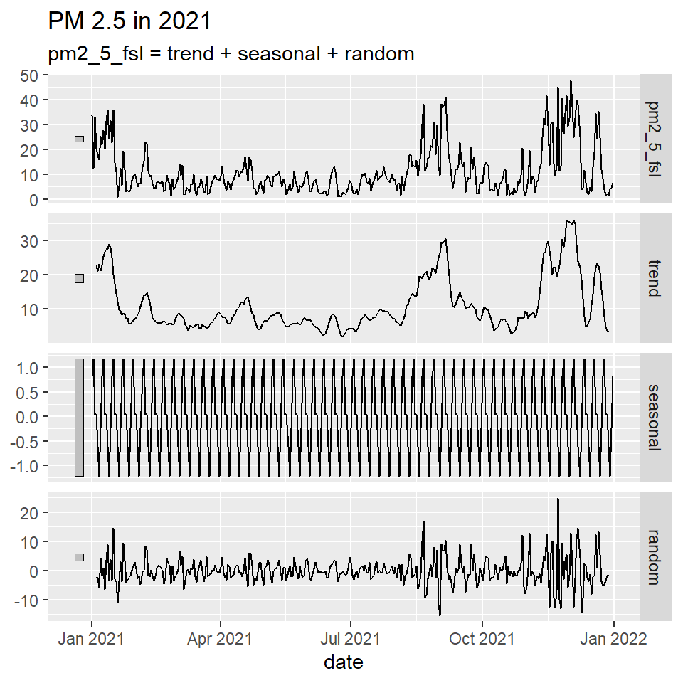
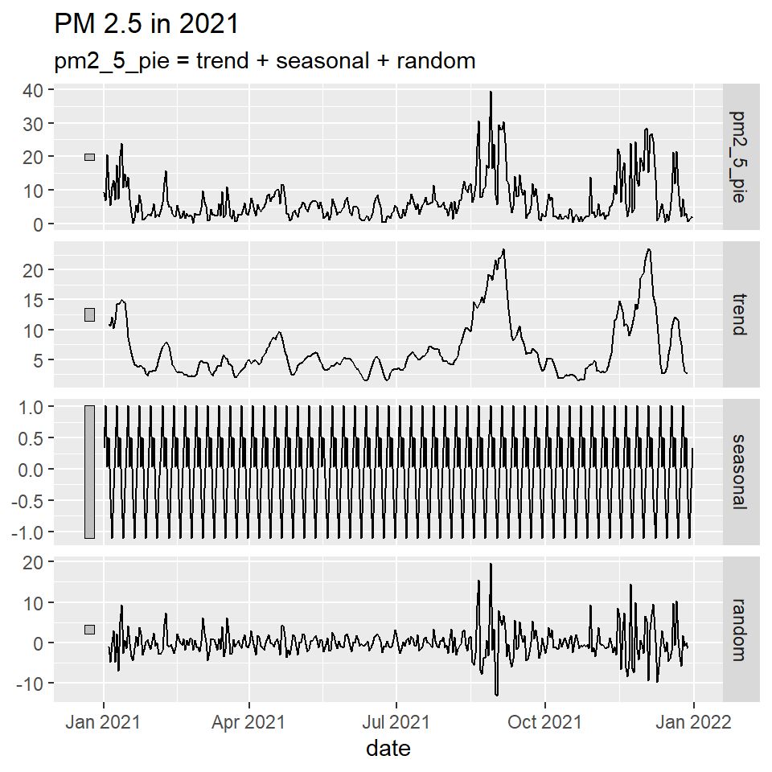

Show the code
knitr::include_graphics(here::here(file.path("pics", "Oakland.jpg")))knitr::include_graphics(here::here(file.path("pics", "Oakland.jpg")))Photo: Oakland, CA Hotels - Marriott’s Official Site
Oakland has historically been known for their poor air quality which has been exacerbated by the increase in vehicles on the road. East and West Oakland in particular are impacted more than the wealthier northern region due to the proximity of major highways, the port of Oakland, railroad shops, and the local industry. This analysis will be looking into air quality from the wealthy regions and comparing them to the air quality from the East/West regions of Oakland to see if there are any significant differences.
More specifically PM 2.5 will be analyzed due to its detrimental impacts on the environment and human health, especially respiratory issues such as asthma. In addition, the year 2021 will be evaluated to view the impacts of new Regulations implemented post the Covid-19 pandemic as most places went back to business as usual.
knitr::opts_chunk$set(echo = TRUE)
# Load all the packages needed here
library(tidyverse)
library(readr)
library(gt)
library(tufte)
library(feasts)
library(lubridate)
library(janitor)
library(here)
library(ggplot2)
library(sjPlot)
library(rempsyc)
library(broom)
# Set the Root Directory, Data Directory, and Working Directory
rootdir <- ("C:/Users/asandhu/Desktop/MEDS/EDS-222-Statistics/")
datadir <- file.path(rootdir, "Data", "final_project")
setwd <- (file.path(rootdir, "Homework", "final_project", "Stats_Final_blog", "stats_final"))Data from PurpleAir Monitors provides real-time air quality information along with hourly, daily, weekly, and monthly averages. This is great for a more precise analysis and getting to more accurate results of the location being evaluated.
#Read in the data
marina_red <- read_csv(here("final_project_data", "5th_Avenue_Marina_Bldg_(37.788488-122.263106)_port.csv")) %>% clean_names()
alameda_green <- read_csv(here("final_project_data", "Alameda_Landing_(37.789079-122.28284)_south.csv")) %>% clean_names()
bower_red <- read_csv(here("final_project_data", "Bower_House_(37.803884-122.297151)_hwy880.csv")) %>% clean_names()
oak_red <- read_csv(here("final_project_data", "DBA_OAK_(37.811266-122.273968)_hwy980.csv")) %>% clean_names()
fsl_red <- read_csv(here("final_project_data", "FSL_(37.795078-122.270519)_highway.csv")) %>% clean_names()
holman_green <- read_csv(here("final_project_data", "Holman_Road_(37.80638-122.229373)_richwy580.csv")) %>% clean_names()
marina_green <- read_csv(here("final_project_data","Marina_drive_(37.767074-122.228422)_southwater.csv")) %>% clean_names()
piedmont_green <- read_csv(here("final_project_data", "Piedmont_(37.823653-122.230868)_rich.csv")) %>% clean_names()
hills_green <- read_csv(here("final_project_data", "Piedmont_Hills_(37.826523-122.213795)_richwy13.csv")) %>% clean_names()
sausal_red <- read_csv(here("final_project_data", "Sausal_Street_(37.798625-122.220344)_hwy580.csv")) %>% clean_names()# Data Wrangling: Average PM 2.5 concentration by day for each monitoring sites
marina_red_mean <- marina_red %>%
mutate(date = ymd_hms(created_at), pm2_5 = pm2_5_atm_ug_m3) %>%
mutate(date = ymd(paste0(year(date), "-", month(date), "-", day(date)))) %>%
group_by(date) %>%
summarise(pm2_5_mar = mean(pm2_5, na.rm = TRUE))
alameda_green_mean <- alameda_green %>%
mutate(date = ymd_hms(created_at), pm2_5 = pm2_5_atm_ug_m3) %>%
mutate(date = ymd(paste0(year(date), "-", month(date), "-", day(date)))) %>%
group_by(date) %>%
summarise(pm2_5_ala = mean(pm2_5, na.rm = TRUE))
bower_red_mean <- bower_red %>%
mutate(date = ymd_hms(created_at), pm2_5 = pm2_5_atm_ug_m3) %>%
mutate(date = ymd(paste0(year(date), "-", month(date), "-", day(date)))) %>%
group_by(date) %>%
summarise(pm2_5_bow = mean(pm2_5, na.rm = TRUE))
fsl_red_mean <- fsl_red %>%
mutate(date = ymd_hms(created_at), pm2_5 = pm2_5_atm_ug_m3) %>%
mutate(date = ymd(paste0(year(date), "-", month(date), "-", day(date)))) %>%
group_by(date) %>%
summarise(pm2_5_fsl = mean(pm2_5, na.rm = TRUE))
hills_green_mean <- hills_green %>%
mutate(date = ymd_hms(created_at), pm2_5 = pm2_5_atm_ug_m3) %>%
mutate(date = ymd(paste0(year(date), "-", month(date), "-", day(date)))) %>%
group_by(date) %>%
summarise(pm2_5_hills = mean(pm2_5, na.rm = TRUE))
holman_green_mean <- holman_green %>%
mutate(date = ymd_hms(created_at), pm2_5 = pm2_5_atm_ug_m3) %>%
mutate(date = ymd(paste0(year(date), "-", month(date), "-", day(date)))) %>%
group_by(date) %>%
summarise(pm2_5_hol = mean(pm2_5, na.rm = TRUE))
marina_green_mean <- marina_green %>%
mutate(date = ymd_hms(created_at), pm2_5 = pm2_5_atm_ug_m3) %>%
mutate(date = ymd(paste0(year(date), "-", month(date), "-", day(date)))) %>%
group_by(date) %>%
summarise(pm2_5_mag = mean(pm2_5, na.rm = TRUE))
oak_red_mean <- oak_red %>%
mutate(date = ymd_hms(created_at), pm2_5 = pm2_5_atm_ug_m3) %>%
mutate(date = ymd(paste0(year(date), "-", month(date), "-", day(date)))) %>%
group_by(date) %>%
summarise(pm2_5_oak = mean(pm2_5, na.rm = TRUE))
piedmont_green_mean <- piedmont_green %>%
mutate(date = ymd_hms(created_at), pm2_5 = pm2_5_atm_ug_m3) %>%
mutate(date = ymd(paste0(year(date), "-", month(date), "-", day(date)))) %>%
group_by(date) %>%
summarise(pm2_5_pie = mean(pm2_5, na.rm = TRUE))
sausal_red_mean <- sausal_red %>%
mutate(date = ymd_hms(created_at), pm2_5 = pm2_5_atm_ug_m3) %>%
mutate(date = ymd(paste0(year(date), "-", month(date), "-", day(date)))) %>%
group_by(date) %>%
summarise(pm2_5_sau = mean(pm2_5, na.rm = TRUE))
# Take the mean of the red zone communites
red <- mean((sausal_red_mean$pm2_5_sau + oak_red_mean$pm2_5_oak + fsl_red_mean$pm2_5_fsl + bower_red_mean$pm2_5_bow + marina_red_mean$pm2_5_mar)/5)
# Take the mean of the green zone communities
green <- mean((piedmont_green_mean$pm2_5_pie + marina_green_mean$pm2_5_mag + holman_green_mean$pm2_5_hol + hills_green_mean$pm2_5_hills + alameda_green_mean$pm2_5_ala)/5)Marina, Bower, FSL, and Sausal represent the four disadvantage neighborhoods. There are peaks in winter and early fall compared to spring and summer months.
# Plot the individual red zone areas and display side by side
marina_red_plot <- ggplot(data = marina_red_mean, aes(x = date, y = pm2_5_mar)) + geom_point() + labs(title = "2021 PM 2.5 concentration in Marina", x = "Date", y = "PM2.5") + theme(axis.text.x = element_text(angle = 45, vjust = 0.5, hjust=1))
bower_red_plot <- ggplot(data = bower_red_mean, aes(x = date, y = pm2_5_bow)) + geom_point() + labs(title = "2021 PM 2.5 concentration in Bower", x = "Date", y = "PM2.5") + theme(axis.text.x = element_text(angle = 45, vjust = 0.5, hjust=1))
fsl_red_plot <- ggplot(data = fsl_red_mean, aes(x = date, y = pm2_5_fsl)) + geom_point() + labs(title = "2021 PM 2.5 concentration in FSL", x = "Date", y = "PM2.5") + theme(axis.text.x = element_text(angle = 45, vjust = 0.5, hjust=1))
sausal_red_plot <- ggplot(data = sausal_red_mean, aes(x = date, y = pm2_5_sau)) + geom_point() + labs(title = "2021 PM 2.5 concentration in Sausal", x = "Date", y = "PM2.5") + theme(axis.text.x = element_text(angle = 45, vjust = 0.5, hjust=1))
gridExtra::grid.arrange(marina_red_plot, bower_red_plot, fsl_red_plot, sausal_red_plot)
Alameda, Holman, Marina, and Piedmont represent the four wealthy neighborhoods. The plots display a general trend across both poor neighborhoods and wealthy neighborhoods and better air quality in the spring and summer months.
# # Plot the individual green zone areas and display side by side
alameda_green_plot <- ggplot(data = alameda_green_mean, aes(x = date, y = pm2_5_ala)) + geom_point() + labs(title = "2021 PM 2.5 concentration in Alameda", x = "Date", y = "PM2.5") + theme(axis.text.x = element_text(angle = 45, vjust = 0.5, hjust=1))
holman_green_plot <- ggplot(data = holman_green_mean, aes(x = date, y = pm2_5_hol)) + geom_point() + labs(title = "2021 PM 2.5 concentration in Holman", x = "Date", y = "PM2.5") +theme(axis.text.x = element_text(angle = 45, vjust = 0.5, hjust=1))
marina_green_plot <- ggplot(data = marina_green_mean, aes(x = date, y = pm2_5_mag)) + geom_point() + labs(title = "2021 PM 2.5 concentration in MarinaG", x = "Date", y = "PM2.5") + theme(axis.text.x = element_text(angle = 45, vjust = 0.5, hjust=1))
piedmont_green_plot <- ggplot(data = piedmont_green_mean, aes(x = date, y = pm2_5_pie)) + geom_point() + labs(title = "2021 PM 2.5 concentration in Piedmont", x = "Date", y = "PM2.5") + theme(axis.text.x = element_text(angle = 45, vjust = 0.5, hjust=1))
gridExtra::grid.arrange(alameda_green_plot, holman_green_plot, marina_green_plot, piedmont_green_plot)
Since there seemed to be seasonality and trend to the data, I ran a classical decomposition to check seasonality separate from trend. Since the plots were similar, I took a look at FSL from the disadvantage neighborhood and Piedmont from the wealthier neighborhood and ran the analysis. Both decomposition models conclude that trend is driving the overall variation compared to seasonality.
# Take a look at 2 air monitors to view the classical decomposition to recover seasonality separately from trend
fsl <- as_tsibble(fsl_red_mean, index = date) |>
model(classical_decomposition(pm2_5_fsl, type = "additive")) |>
components() |> autoplot() + labs(title = "PM 2.5 in 2021")
pie <- as_tsibble(piedmont_green_mean, index = date) |>
model(classical_decomposition(pm2_5_pie, type = "additive")) |>
components() |> autoplot() + labs(title = "PM 2.5 in 2021")
plot(fsl)
plot(pie)
# Merging the data frames together in order to complete hypothesis test
test <- merge(alameda_green_mean, holman_green_mean, all = T)
test2 <- merge(test, marina_green_mean, all = T)
green_zones <- merge(test2, piedmont_green_mean,all = T)
green_zones$PMean <- apply(green_zones[,2:5], 1, mean)
test5 <- merge(marina_red_mean, bower_red_mean, all =T)
test6 <- merge(test5,fsl_red_mean, all = T)
red_zones <- merge(test6, sausal_red_mean, all = T)
red_zones$PMean <- apply(red_zones[,2:5], 1, mean)Null Hypothesis: No difference between poor and rich neighborhoods.
Alternative Hypothesis: There is a difference between poor and rich neighborhoods.
The first t-test is looking at specific monitors, one from a wealthy neighborhood and another from a poor neighborhood. With a p-value of .002, which has a significance level of less than 5%, we can reject the null hypothesis.
To compare, another t-test was conducted which averaged the four wealthy neighborhoods and the four poor neighborhoods, respectively. The results produced a much higher p-value that was not statically significant, which meant we could not reject the null hypothesis.
# Hypothesis Test
individual <- t.test(x = green_zones$pm2_5_ala, y = red_zones$pm2_5_bow)
mean <- t.test(x = red_zones$PMean, y = green_zones$PMean)
stats.table <- tidy(individual, conf.int = TRUE)
nice_table(stats.table, broom = "t.test")Method | Alternative | Mean 1 | Mean 2 | M1 - M2 | t | df | p | 95% CI |
|---|---|---|---|---|---|---|---|---|
Welch Two Sample t-test | two.sided | 9.78 | 11.99 | -2.22 | -3.03 | 711.23 | .002 | [-3.65, -0.78] |
stats.table2 <- tidy(mean, conf.int = TRUE)
nice_table(stats.table2, broom = "t.test")Method | Alternative | Mean 1 | Mean 2 | M1 - M2 | t | df | p | 95% CI |
|---|---|---|---|---|---|---|---|---|
Welch Two Sample t-test | two.sided | 9.79 | 9.17 | 0.62 | 0.98 | 607.81 | .328 | [-0.62, 1.87] |
There is still much more to unpack and more testing would be required to make conclusions. The hypothesis test was inconclusive as comparing a wealthy neighborhood to a poor neighborhood showed statistical significance. However, once the data was averaged for all the neighborhoods being tested, the p-value was too high for there to be any significance.
There were many limitations to the project. For example, I focused on the year 2021, only that one year was plotted in the classical decomposition model. Hence, this does not interpret an accurate representation of seasonality because historical data may be required for the model. Some monitors were also missing some data which could be due to monitor malfunctioning or being broken for a period of time. It is also worth noting that PurpleAir monitors are purchased and installed by individuals and many may not be able to afford them. Therefore, we may not have air monitor data from the most disadvantage neighborhoods to the extent the wealthier neighborhoods do.
CalEPA. “Pollution and Prejudice.” ArcGIS StoryMaps, Esri, 17 Aug. 2021, https://storymaps.arcgis.com/stories/f167b251809c43778a2f9f040f43d2f5.
“PurpleAir: Real-Time Air Quality Monitoring.” PurpleAir, Inc., https://www2.purpleair.com/.
“State of Global Air.” Health Impacts of PM2.5 | State of Global Air, https://www.stateofglobalair.org/health/pm.